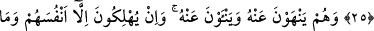
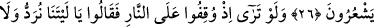

MÜŞRİKLERİN DUYACAKLARI
PİŞMANLIK VE HASRET
25. Onlardan seni (okuduğun Kur’an’ı) dinleyenler de vardır. Fakat onu
anlamalarına engel olmak için kalplerinin üstüne perdeler, kulaklarına da ağırlık
verdik. Onlar her türlü mûcizeyi görseler bile yine de ona inanmazlar. Hatta o
kâfirler sana geldiklerinde: “Bu Kur’an eskilerin masallarından başka bir şey
değildir” diyerek seninle tartışırlar.
26. Onlar, hem insanları Peygamber’e yaklaşmaktan vazgeçirmeye çalışırlar, hem
de kendileri ondan uzaklaşırlar. Oysa onlar farkında olmadan ancak kendilerini
helak ederler.
27. Onların ateşin karşısında durdurulup “ah, keşke dünyaya geri gönderilsek de
bir daha Rabbimizin âyetlerini yalanlamasak ve inananlardan olsak!” dediklerini
bir görsen!...
28. Hayır! Daha önce gizlemekte oldukları şeyler (günahlar) kendilerine
göründü. Eğer (dünyaya) geri gönderilseler yine kendilerine yasak edilen şeylere
döneceklerdir. Zîrâ onlar gerçekten yalancıdırlar.